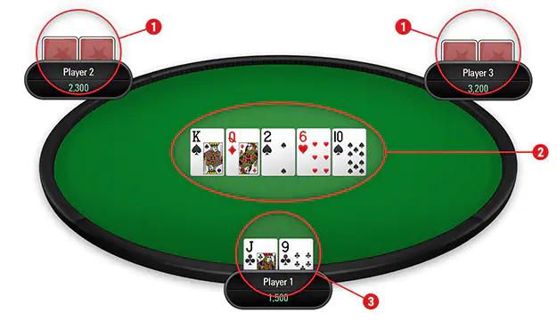
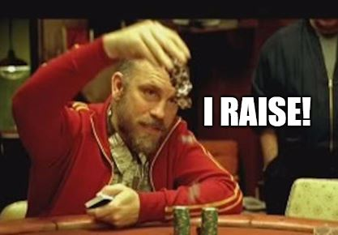
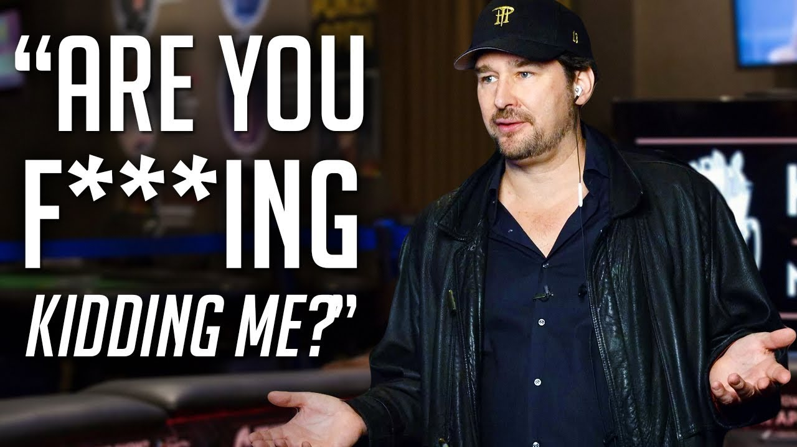
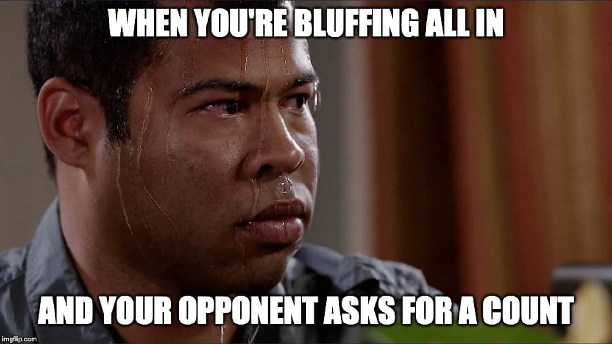

Aprenda a jogar poker

Como você ganha?
Geralmente, o vencedor de cada mão de poker é o jogador que tem a mão de classificação mais alta no momento em que todas cartas são mostradas ao final da mão – conhecido como ‘showdown’ – ou o jogador que faz a última aposta não paga, vencendo sem precisar chegar em um showdown.Não tem certeza se um flush vence uma sequência? Não se lembra de como fazer um full house? Você pode encontrar todas as informações que você precisa sobre classificações de mão na tabela ao lado. As mãos mais fortes estão na linha de cima, de cima para baixo , com a mão mais fraca possível sendo simplesmente uma carta alta.
Começando?
Jogos de poker geralmente apresentam uma aposta forçada, como o Big Blind e o Small Blind no Hold’em e Omaha. Essas apostas forçadas englobam o pote inicial em qualquer mão de poker, que é o primeiro incentivo que os jogadores têm para ganhar a mão. A ação surgindo das rodadas de aposta subsequentes aumenta mais o tamanho do pote.
Distribuição de Cartas e Rodadas de Aposta
Após quaisquer cartas iniciais serem distribuídas, os jogadores geralmente agem em turnos, em movimento no sentido horário da mesa.
Cada jogador pode geralmente realizar uma das seguintes ações na sua vez de agir:
-
Check - Dar check é recusar a oportunidade de abrir a aposta. Os jogadores só podem dar check quando não há aposta durante a rodada atual, e o ato de dar check passa a ação no sentido horário para a próxima pessoa na mão. Se todos os jogadores ativos derem check, esses jogadores permanecem na mão e a rodada é considerada como concluída.
-
Apostar - Os jogadores podem apostar se nenhum outro jogador tiver apostado durante a rodada atual. Depois de uma aposta ser feita, outros jogadores devem ‘pagar’ igualando o valor apostado, para permanecerem na mão.
-
Desistir - Jogadores que desistem de suas cartas e não podem vencer ou agir novamente durante a mão atual.
-
Pagar - Os jogadores podem pagar se outros jogadores tiverem apostado durante a rodada atual. Isso exige que o jogador que está pagando iguale a aposta mais alta feita.
-
Aumentar - Os jogadores podem aumentar se outros jogadores tiverem apostado durante a rodada atual. Isso exige que o jogador que está aumentando iguale a aposta mais alta feita e depois faça uma maior. Todos os jogadores seguintes devem pagar o aumento ou aumentar novamente (‘reaumentar’) para permanecerem na mão.
Diferentes variantes de poker têm diferentes rodadas de apostas. Texas Hold’em e Omaha são os dois jogos de poker mais populares no mundo e têm estruturas de aposta idênticas, com quatro rodadas de aposta conhecidas como pré-flop, o flop, o turn e o river.
A rodada de aposta pré-flop inicia assim que todos os jogadores tiverem recebido suas cartas próprias, antes de quaisquer cartas comunitárias serem distribuídas; a aposta no flop ocorre após as primeiras três cartas comunitárias serem distribuídas; no turn, após a quarta carta comunitária; e no river após a quinta e última carta comunitária.
Em cada rodada de aposta, a aposta continua até todos os jogadores terem igualado as apostas feitas ou desistido (se nenhuma aposta for feita, a rodada é concluída quando cada jogador tiver feito check). Quando a rodada de aposta é concluída, a próxima rodada de aposta/distribuição inicia, ou a mão é concluída.
Aqui está um exemplo de uma mão de Texas Hold’em após todas as cartas serem distribuídas. Como você pode ver, os jogadores podem usar qualquer uma de suas duas cartas próprias com qualquer uma das cinco cartas comunitárias para fazer a melhor mão de cinco cartas que conseguirem. Nesse caso, você pode usar suas cartas próprias e três das cartas comunitárias compartilhadas para fazer uma sequência.

Cartas próprias dos seus oponentes
Cartas Comunitárias
Suas cartas
Showdown
Depois que a última aposta ou aumento tiver sido pago durante a rodada final de aposta, ocorre um showdown. Os jogadores ativos restantes devem mostrar ou ‘declarar’ suas mãos, e o(s) jogador(es) com a(s) mão(s) de melhor classificação ganha(m) o pote.
Os jogadores geralmente mostram suas mãos em ordem, ao invés de todos ao mesmo tempo. Vários jogadores podem dividir um único pote, com o pote dividido de diferentes formas dependendo das regras do jogo e como a mão de cada jogador se classifica em relação aos seus oponentes.
Limites de Aposta
Os limites de aposta se referem à quantia que os jogadores podem abrir e aumentar. Geralmente, os jogos de poker são dos seguintes tipos; no limit, pot limit ou fixed limit.
No Limit – em jogos de poker com uma estrutura de aposta sem limite, cada jogador pode apostar ou aumentar em qualquer valor que quiser e incluindo todo o seu stack (o número total de fichas que possuem em um determinado momento) em qualquer rodada de aposta, sempre que for sua vez de agir. br
Pot Limit – em jogos de poker com uma estrutura de aposta de limite de pote, cada jogador pode apostar ou aumentar em qualquer valor que quiser e incluindo o tamanho total do pote no momento.
Fixed Limit – em jogos de poker com uma estrutura de aposta de limite fixo, cada jogador pode escolher pagar, apostar ou aumentar, mas apenas por um valor fixo. O valor fixo para qualquer rodada de aposta é definido antecipadamente.
Para jogos No Limit e Pot Limit, a coluna ‘Apostas’ no lobby PokerStars indica o Small Blind e o Big Blind naquele jogo, enquanto que nos Mixed Games, as Apostas listadas no lobby são os valores de aposta para jogos Limit. Nas rodadas Pot Limit e No Limit, os blinds são geralmente metade dos blinds dos jogos limit.
Limites de Mesa e All-in
Você pode ter visto uma cena de poker em um filme ou na TV quando um jogador está diante de uma aposta por mais fichas do que ele tem na mesa e é forçado a apostar um relógio, um carro ou algum outro bem para se manter na mão. Isso pode fazer um bom drama, mas não é a forma que o poker costuma ser jogado na vida real!
Todos os jogos no nosso site são jogados em ‘limites de mesa’, o que significa que apenas as fichas em jogo no início de cada mão podem ser usadas durante a mão. A regra de limites de mesa tem uma aplicação chamada de regra ‘All-In’, que diz que um jogador não pode ser forçado a desistir de uma mão de poker porque o jogador não tem fichas o bastante para pagar uma aposta.
Um jogador que não tem fichas o bastante para pagar uma aposta é declarado em All-In. O jogador é elegível para a porção do pote até o ponto de sua aposta final. Toda ação a mais envolvendo outros jogadores ocorre em um ‘pote paralelo’, que o jogador em All-In não é elegível para ganhar. Se mais do que um jogador for All-In durante uma mão, pode haver mais de um pote paralelo.
Guia de estratégia de poker
O poker não é um jogo complicado. Aprender as regras básicas e entender quais das mãos são melhores é algo que pode ser feito em minutos. Essa é a parte fácil. Mas dominar verdadeiramente a estratégia do poker e torná-lo um meio de ganhar dinheiro é que pode levar uma vida inteira.
Para os novos jogadores começando, é importante equilibrar a diversão e a emoção de jogar poker com as perdas substanciais que você poderá acumular rapidamente se não souber o que está fazendo. Como se tornar o próximo grande astro do poker? Aqui estão cinco dicas de estratégia de poker para colocar você no caminho certo.
Dica 1: Seja mais agressivo do que o normal...
A única maneira de ganhar no poker é apostar, e a única maneira de ganhar muito é apostar muito. O poker é um jogo de agressividade, oportunidade e foco. Além disso, conforme você dominar o básico do jogo, aprenderá quando é preciso aumentar a agressividade na mesa.
Muitos jogadores novatos são simplesmente cautelosos demais, na maior parte do tempo. Eles pedem mesa quando deveriam apostar e pagam quando deveriam aumentar.
Em mãos de abertura fortes, como pares altos ou uma mão composta de A-K ou A-Q, você deve jogar de forma mais agressiva do que pensa. Essas são cartas iniciais excelentes; então, em um jogo com uma mesa cheia, procure pressionar os jogadores com mãos mais fracas a saírem ou forçá-los a pagar mais para ficar.
Não há nada pior que jogar com um par de reis e ser derrotado por alguém que pediu mesa antes do flop (abertura) com 8-4 e milagrosamente conseguiu um straight. Faça-os pagar para ver essas cartas e pressione o máximo de pessoas a sair do pote o mais cedo possível.
Com seis pessoas em um pote, suas chances de uma vitória são de apenas 17%. Com apenas dois no pote, as chances aumentam para 50%.
O que é pior em um jogo cauteloso é que ele marca você como um jogador mais fraco pelo resto da mesa. Se você raramente aposta ou aumenta, logo começará a ser pressionado por jogadores mais fortes que sabem que cederá sob pressão. Quando você apostar alto, os outros jogadores imediatamente saberão que você tem uma mão forte e todo mundo vai desistir rapidamente, reduzindo o valor do seu prêmio.
Lembre-se de que o jogo agressivo constrói grandes potes. Se você tem uma mão vencedora, sua melhor jogada é extrair da mesa tudo o que puder. Isso também é poker no máximo da diversão e emoção.

Dica 2: ...mas você também deve ser paciente
Ser agressivo não significa jogar dinheiro fora em mãos ruins e ir all-in na esperança de pegar uma grande carta no river. Essa é uma maneira infalível de reduzir rapidamente o tamanho do seu stack.
Uma das dicas mais básicas de poker inteligente é desistir em muito mais mãos do que você joga. Para muitos jogadores, isso soa como uma maneira terrivelmente chata de passar uma noite, ou seja, apenas sentado à mesa enquanto todo mundo está no jogo.
Lembre-se de que, com base simplesmente na lei das probabilidades, a maioria das mãos distribuídas vão ser perdidas. Se você não tiver uma mão forte, sua melhor jogada é desistir, e desistir imediatamente. Use o tempo para observar os outros jogadores na mesa e estudar a maneira como eles jogam. Quando você não precisa se preocupar com a sua própria mão, pode se concentrar mais nos outros.
Moral da história: espere pacientemente uma situação em que as probabilidades estejam a seu favor e, em seguida, use sua agressividade para ir atrás do pote.

Dica 3: Assista como um falcão
Há um velho ditado no poker que diz: jogue o jogador, não suas cartas. Essa é uma maneira elegante de dizer que o poker é baseado na situação. Sua mão é geralmente boa ou ruim apenas em relação ao que o outro cara está segurando. K-K é uma mão fantástica, mas se outro jogador tiver A-A, seus reis perderão 82% do tempo. Imagine a situação inversa: você tem A-10, enquanto o outro cara tem J-J. O flop abre 10-8-6. De repente, seus dois 10 têm apenas 20% de chance de ganhar.
Como você sabe o que o outro cara tem? Observando os outros jogadores e aprendendo como eles jogam. Imagine a situação do flop 10-8-6 acima e você com A-A. O que faria? Você viu o cara na sua frente jogando mãos fortes de maneira passiva (slow-playing) antes? Você pode jogar com mais cautela com os seus ases. Você já viu ele fazer grandes blefes para tentar pegar potes quando cartas "assustadoras" estão na mesa? Você pode chamar as apostas dele ou até mesmo aumentar, sabendo que 10-10 é uma mão muito rara.
Aprenda a ler os outros jogadores e observar as “dicas”. Dicas não são apenas os hábitos nervosos que você vê nos filmes, como brincar com as fichas ou com um anel, também incluem a forma como uma pessoa joga. Alguém que tem pago a noite toda e que de repente faz um enorme aumento provavelmente está com uma mão imbatível, por exemplo.
Dica 4: Jogue poker a longo prazo
Como um jogador novato, você vai perder parte do tempo. Em algum momento, você irá all-in com um par de ases e, então, perderá para outro jogador com um par de 9s que pegará um terceiro 9 no river. Não deixe que esse tipo de perda (conhecido como "bad beat") o desanime. As probabilidades nem sempre estarão a seu favor; mas, a longo prazo, esses ases ganharão mais do que perderão contra os 9s. Aprender a ganhar no poker é um projeto de longo prazo que requer jogar milhares e milhares de mãos em um ambiente de jogo real. É a única maneira de compreender bem o básico e vai demorar muito mais do que isso para se tornar um especialista.
Ao desenvolver suas habilidades, usando este guia de estratégia de poker, mantenha as três primeiras dicas em mente: jogue com cautela, seja agressivo quando necessário e estude a mesa como se fosse seu filme favorito. Isso manterá seu jogo sob controle e fará com que resista à tentação de "apostar descontroladamente". Não tente compensar perdas com apostas tolas. Defina um saldo para cada sessão e de longo prazo e atenha-se a ele.
Dica 5: Desenvolva suas habilidades
Embora você aprenda muito com as vitórias e derrotas, o poker não é apenas um jogo em que você domina na mesa. Você também pode aprender muito mais lendo blogs e livros sobre estratégia de poker. Você pode começar aqui no blog do 888poker ou conferir o Super System de Doyle Brunson e Dan Harrington’s Harrington sobre Hold‘em. Há muitas outras fontes sobre poker além dessas, você encontrará as certas.
Jogar online também é uma ótima maneira de melhorar suas habilidades e conhecimentos. Só não se esqueça de escolher a mesa certa. As mesas de “Dinheiro virtual” provavelmente estarão cheias de amadores que não levam o jogo a sério. Então, procure os torneios de apostas baixas, com cacifes de US$ 5,00 ou menos. Faça anotações de tudo para ajudá-lo a refinar suas estratégias e melhorar cada vez mais.

Conclusão
Todo jogador já teve uma sessão ruim na mesa. Lembre-se, quando estiver começando a perder o seu pequeno saldo, de que muitos jogadores profissionais perderam dezenas de milhares de dólares em uma única sessão. Mas eles conseguiram se recuperar e se tornar vencedores de milhões de dólares no circuito profissional.
Todos nós tivemos que começar em algum lugar; por isso, não desanime se as coisas não saírem imediatamente à sua maneira. Pense com clareza, siga as dicas de poker deste blog e continue praticando para melhorar suas habilidades. E, acima de tudo: divirta-se! Afinal, é apenas um jogo.